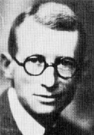

Biographies: Davidson Black

Davidson Black was born in Toronto, Canada, in 1884. As a boy he became an expert canoeist, and while still in school spent his summers carrying supplies long distances by canoe for the Hudson Bay Company. He also befriended Indians and learned their language. Black gained a degree in medical science in 1906, went back to school to study comparative anatomy, and began working as an anatomy instructor in 1909. In 1914 he spent a half-year sabbatical working under the famous neuroanatomist Grafton Elliot Smith in England, which fired an interest in human evolution. In 1919 he was invited to work at the Peking Union Medical College in China, a position he happily accepted because it was then widely thought that humans had originated in central Asia. Black wanted to search for human ancestors, although the PUMC did not approve of this objective and felt that he should be concentrating on his medical duties. While planning an expedition to central Asia in 1926 he learned that two human fossil teeth had been found at Zhoukoudian near Peking, and with the aid of a generous grant from the Rockefeller Foundation, began a large excavation there in 1927.After finding a further tooth in 1927, Black named it as a new species and genus, Sinanthropus pekinensis. Defining a new genus on so little material was a bold move, and many scientists were skeptical of it. (Rightly so, as it turned out, for the species was later reassigned to Homo erectus). While Black was travelling in 1928 trying to convince others of its validity, half of a lower jaw was found with three teeth in place. Finally, in 1929, Black got the evidence he was looking for when the first Peking Man skull (Skull III) was discovered. A second skull (Skull II) was also discovered in 1929, but only recognized in 1930. For the next few years, Black worked hard at publishing descriptions of the Peking Man fossils. Although they were very similar to the Java Man fossils found by Eugene Dubois, they confirmed Black's contention that Peking Man had been a pre-human hominid. When Black travelled to Europe in 1930 to present his new evidence, the reception was much more favorable, and 1932 he was elected a Fellow of the Royal Society for his efforts.
Black had a congenital heart defect which was aggravated by overwork. After supper, he often returned to his office to work through the night, returning home early in the morning to sleep to noon. He had been hospitalized for 6 weeks in early 1934, but once released resumed his heavy schedule. In March 1934, he died while working alone during the night, aged only 49.
Unlike most Europeans, Black got on extremely well with his Chinese colleagues, treated them as equals, and was very warmly regarded by them. Walker tells that for many years, on the anniversary of his death, the entire Department of Anatomy and the staff of the Cenozoic Laboratory would visit the European cemetery to leave flowers on his grave.
References
Jia L. and Huang W. (1990): The story of Peking man. Beijing: Foreign Languages Press. (the senior author, Jia Lanpo, has been involved with the Peking Man site since 1931)Walker A.C. and Shipman P. (1996): The wisdom of the bones. New York: Alfred E. Knopf. (a popular history of Homo erectus and the discovery and analysis of the Turkana Boy skeleton)
Dora Hood (1978): Davidson Black: a biography. University of Toronto Press.
Creationist arguments about Peking Man
This page is part of the Fossil Hominids FAQ at the talk.origins Archive.
Home Page |
Species |
Fossils |
Creationism |
Reading |
References
Illustrations |
What's New |
Feedback |
Search |
Links |
Fiction
http://www.talkorigins.org/faqs/homs/dblack.html, 04/24/98
Copyright © Jim Foley
|| Email me